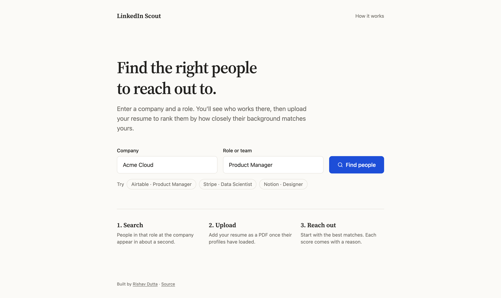
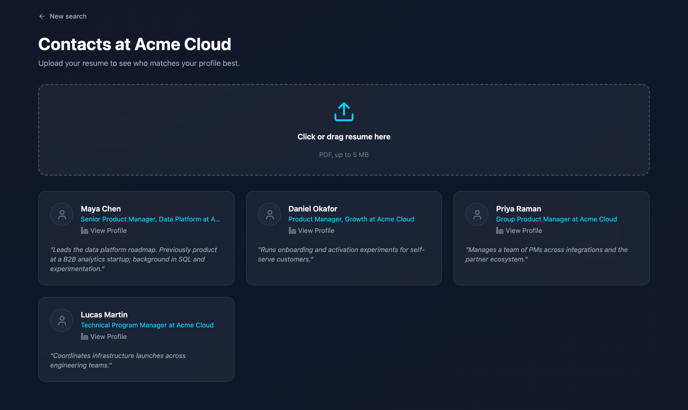
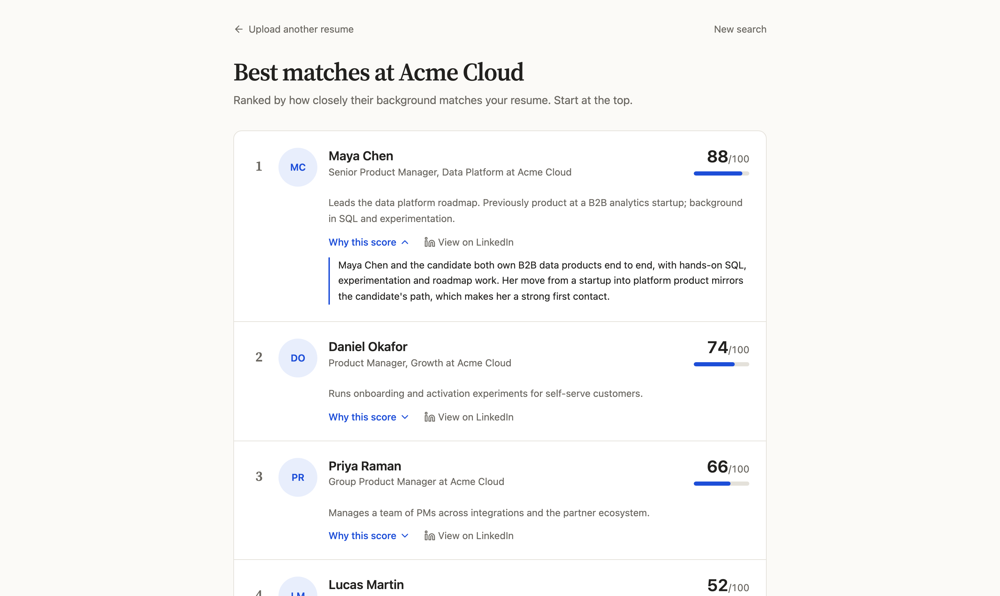
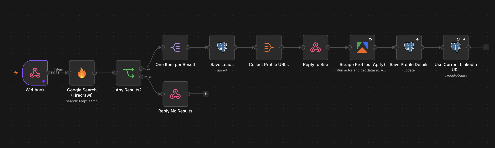
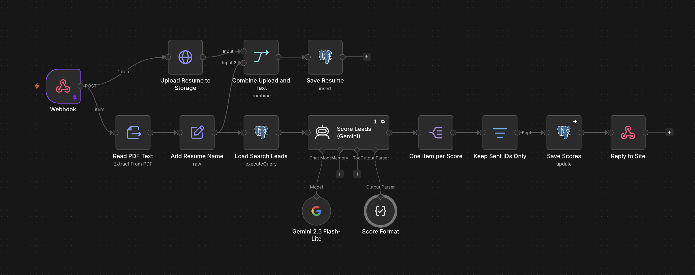
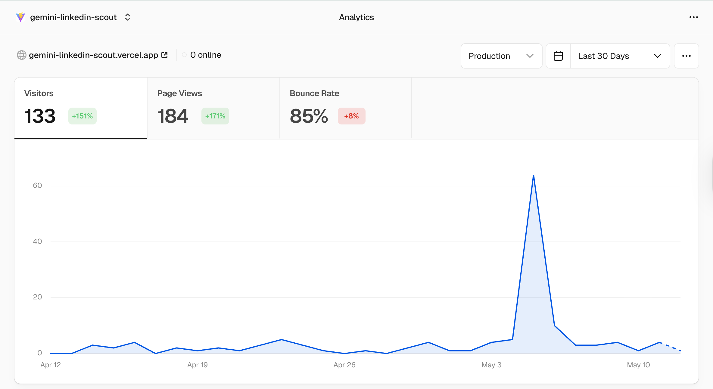

Enter a company + role. Get a ranked list of LinkedIn contacts scored against your resume — with AI reasoning for every match.
Built for job seekers who want to network smarter — no manual searching, no guessing who to reach out to.
Type the company you're targeting and the department or role — e.g. "Airtable" and "Product Manager." Hit Find Contacts and the app kicks off the discovery pipeline.

Landing Page
Contacts GridRelevant LinkedIn profiles at that company appear in about a second; full profiles and photos load in the background. Drop in your resume (PDF) to trigger the AI scoring engine.
Gemini scores every contact against your resume and returns a ranked list with compatibility percentages and an AI Analysis block explaining exactly why each person is a strong match for your background.

Ranked ResultsThe browser never calls n8n directly. A Supabase Edge Function validates every request, rate-limits it and forwards it with a secret. n8n handles the rest: search, scraping, scoring, and writing results back to Supabase.


n8n allowed rapid workflow prototyping without maintaining a full backend codebase. Each node is visual and independently debuggable — critical for a solo build where iteration speed matters most.
The first version called n8n webhooks straight from the browser, so anyone could trigger paid Apify and Gemini runs. A Supabase Edge Function now validates input, rate-limits each visitor and holds the only key to n8n.
No per-execution pricing and no cloud timeouts on long scraping jobs, at $0/month (it moved off a paid DigitalOcean droplet). Tailscale Funnel gives it a stable HTTPS address without buying a domain.
Profile scraping is over 90% of a search’s time (7–35 s). The workflow now replies as soon as the search results are saved, so contacts appear in about a second while photos and full profiles fill in.
Raw scraping results are noisy. Ranking by resume-to-profile alignment makes the outreach list immediately actionable — you know exactly who to prioritise and why, without any manual filtering.
Gemini occasionally rewrote a LinkedIn URL it was asked to copy back, which silently dropped that person’s score. Sending each profile with its database ID removed the problem; only IDs that were sent are accepted.
Instant PostgreSQL with private storage, versioned migrations and Edge Functions. The browser can’t read the leads table directly — only one function that returns a single search’s rows.
User authentication and saved search history were deliberately deferred to ship a working end-to-end flow first. Both are buildable on the existing Supabase Auth stack when needed.
Vercel Web Analytics · Apr 12 – May 10, 2026

MBA candidate at Simon Business School (University of Rochester), graduating May 2026. 5+ years of product management experience across consumer mobility, logistics, and B2B SaaS. Built this solo — as PM, designer, and developer — to solve a real problem I was facing during my own job search.
No account needed. Enter a company and a role to get started.